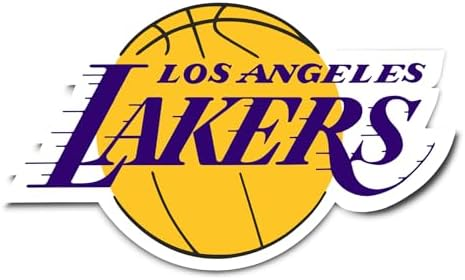
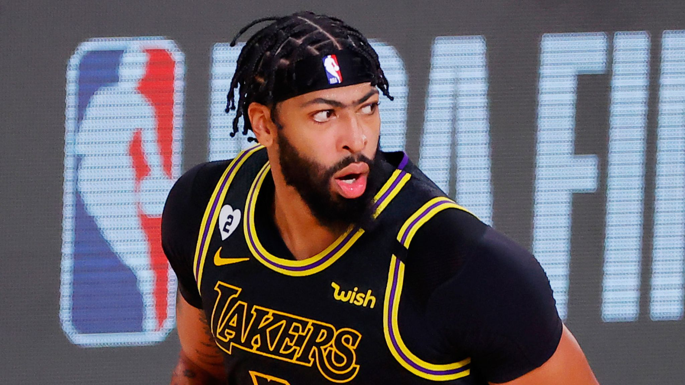
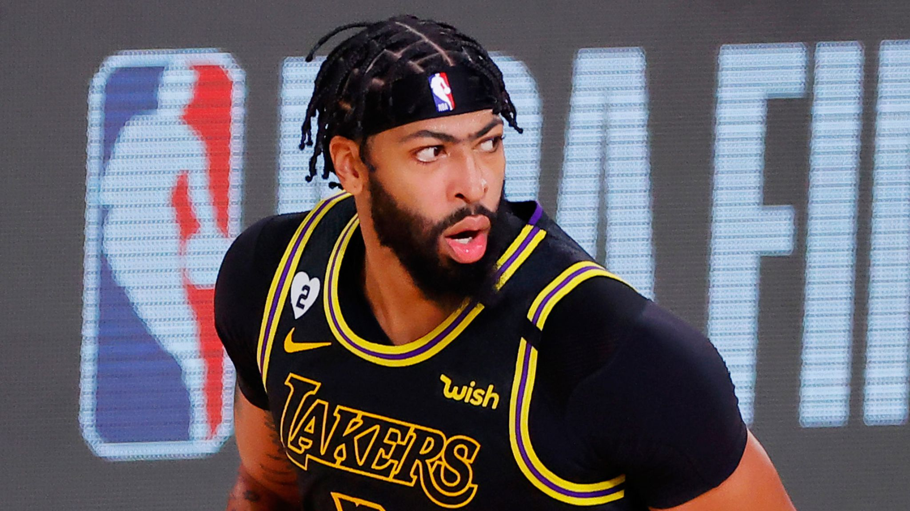

Favorite Team
My favorite Basketball team is the Los Angeles Lakers. Me, my dad, and my brother are all Laker fans so we all watch a lot of basketball. One of my other Brothers is a Suns fan because he likes Kevin Durant so I think that's a little weird but I still like to talk to him about basketball.
Favorite Players
 

My favorite players right now on the Lakers are LeBron James and Anthony Davis. This could be LeBron's last year but I hope he doesn't retire.
Also you can't mention the Lakers without Kobe Bryant. He was the Greatest Laker ever and he is greatly missed by everybody.
Arena
The Lakers play at Crypto.com Arena. Formerly known as Staples Center, Cyrpto.com Arena opened in 1998.
Favorite Sport
Basketball is probably my second favorite sport but I think it's really close between basketball and football but I have watched basketball longer so I will give it the edge.